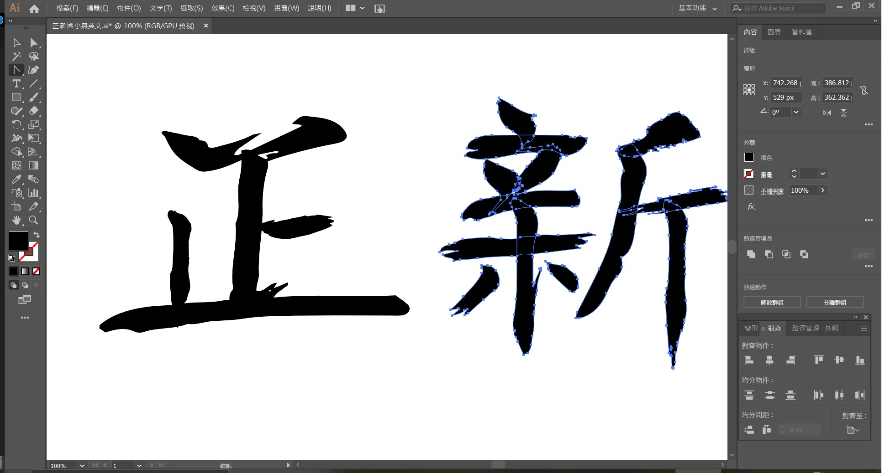
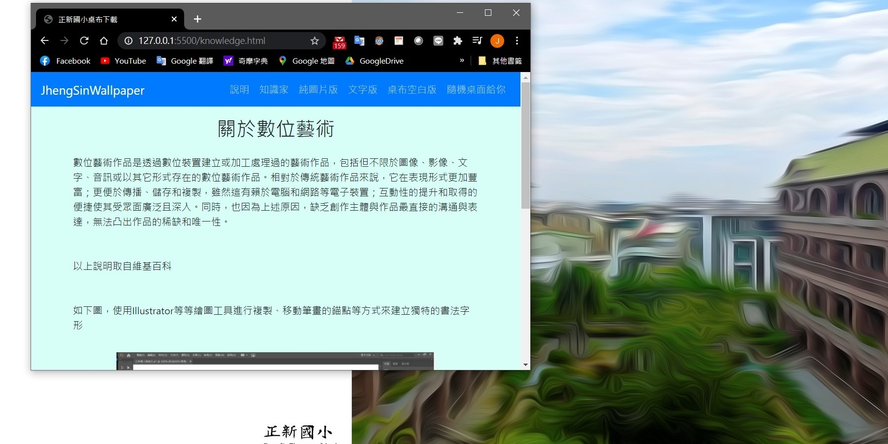
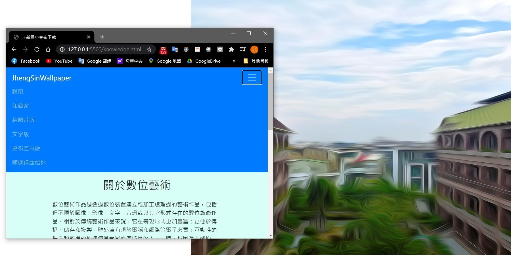

關於數位藝術
數位藝術作品是透過數位裝置建立或加工處理過的藝術作品，包括但不限於圖像、影像、文字、音訊或以其它形式存在的數位藝術作品。相對於傳統藝術作品來說，它在表現形式更加豐富；更便於傳播、儲存和複製，雖然這有賴於電腦和網路等電子裝置；互動性的提升和取得的便捷使其受眾面廣泛且深入。同時，也因為上述原因，缺乏創作主體與作品最直接的溝通與表達，無法凸出作品的稀缺和唯一性。
以上說明取自維基百科
如下圖，使用Illustrator等等繪圖工具進行複製、移動筆畫的錨點等方式來建立獨特的書法字形
關於響應式網頁
響應式網頁設計（英語：Responsive web design，通常縮寫為RWD），或稱自適應網頁設計、回應式網頁設計、對應式網頁設計。 是一種網頁設計的技術做法，該設計可使網站在不同的裝置（從桌面電腦顯示器到行動電話或其他行動產品裝置）上瀏覽時對應不同解析度皆有適合的呈現，減少使用者進行縮放、平移和捲動等操作行為。 對於網站設計師和前端工程師來說，有別於過去需要針對各種裝置進行不同的設計，使用此種設計方式將更易於維護網頁。
以上說明取自維基百科
如下兩張圖，嘗試著拖曳視窗大小，當小於適當的寬度的時候上方連結會有另個形式的呈現方式，在小螢幕的手機上有更好的觸控體驗。
